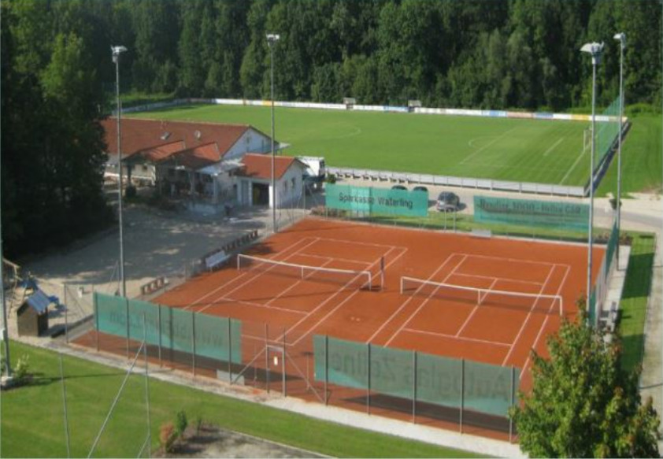

Herzlich willkommen beim Internetauftritt des TC Oberpöring!
FC Oberpöring
Internetauftritt des FC Oberpöring
Folgen Sie uns auf Facebook
Platzbuchung
Tennisplätze online buchen

Der Isar-Sportpark Oberpöring
TC Oberpöring - News
Tennisplätze zum Spielbetrieb freigegeben
Die neuen Tennisplätze sind seit Sonntag, 22.03.2026, 13:00 Uhr, zum Spielbetrieb freigegeben.
Die Plätze können über das Platzreservierungssystem reserviert werden.
Bitte vor dem Spielen den Platz ein Mal beregnen!
Bitte den Platz nach Spielende abziehen und die Linien abkehren!
Nach Spielende bitte den Platz ein Mal beregnen!
Bitte beachten Sie für das Abziehen der Plätze das folgende Video:
Herren ohne Chance gegen den TC Hofkirchen
Die Herren unterlagen am Sonntag, 29.03.2026, in der Halle des TC Eging dem TC Hofkirchen mit 0:6.
Die Herren des TC Oberpöring belegen in der Endabrechnung Platz sechs von sechs Mannschaften in ihrer Spielgruppe.
Damen mit Remis
Die Damen trennten sich in ihrem letzten Winterrundenspiel vom TC Zeholfing/Frammering unentschieden 3:3.
In der Abschlusstabelle belegen die Damen Platz vier unter fünf Mannschaften.
Gruppeneinteilung Sommerrunde 2026
Die Gruppeneinteilung für die Sommerrunde 2026 finden Sie hier!